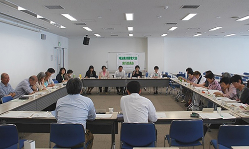

第51回埼玉県消費者大会実行員会
5月26日(火)13時30分より、浦和コミュニティセンターにて第2回実行委員会が開催され、23人(17団体)と事務局2人が参加しました。

1．第1回実行委員会報告
前回からの修正・変更点となる 副実行委員長の確認、
副実行委員長の確認、 修正した検討スケジュール、
修正した検討スケジュール、 参加団体、
参加団体、 大会分担金、大会予算について報告し、確認しました。
大会分担金、大会予算について報告し、確認しました。
2．第51回大会スローガンについて
前回実行委員会以降にいただいた意見、当日午前中にお寄せいただいたフレーズを紹介し、論議を行いました。その中から｢行動する消費者｣｢多様性を持ち、次世代まで続く消費者市民社会｣｢平和｣などのフレーズが出されました。これをもとに次回の実行委員会に、幹事団体で論議し、提案することになりました。
3．記念講演テーマの方向性について
前回実行委員会以降にいただいた意見をもとに話し合いを行いました。貧困・消費者被害の問題、孤立死の問題、地域でのつながりなどのテーマについてお話をもらい、最後にこれらの問題を解決するために消費者団体の果たす役割について提言をいただく内容で樋口さんに打診する方向性を確認しました。
4．大会の実施概要・分科会について
前回実行委員会以降にいただいた意見、実行委員会の論議を受けて、次の4点を確認しました。①午前中は例年どおり、②午後は大ホールを使用しない、③分科会のテーマは、食・消費者問題・社会保障(医療・介護)・くらしの問題の4つ、④会議の形式として、参加型(カフェ)の分科会を設けます。なお、実行委員会終了後に、いったん希望するテーマごとに集まり、プレ学習会アンケートを参考にしながら、具体的な内容について、話し合いました。
5．埼玉県への要請について
集約、大会資料への広告掲載のお願いをしました。大会終了後に埼玉県への要請書に入れたい項目について、第3回・第4回の実行委員会で話し合うことを報告し、各団体からの意見集約と大会資料への広告掲載の呼びかけを各団体にお願いしました。
6．市町村行政へのアンケート実施
今年で17回目となる市町村消費者行政調査を行うことに関し、自治体へ用紙を持参する取り組み、終了後に懇談する取り組みへの参加を呼びかけました。